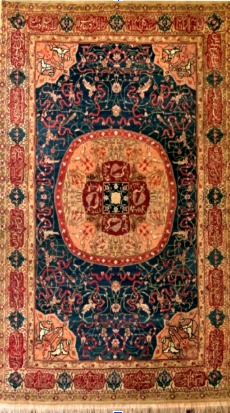

4. फ़ारसी कालीन

अभिलेख संख्या: XXV-B-14
यह एक मध्यक चिह्न (मेडेलियन) वाला कालीन है, जिसमें पक्षियों की आकृतियाँ और अरबेस्क डिज़ाइन बने हुए हैं। फूलों की लताओं वाली सीमाओं (बॉर्डर्स) के बीच पैनलों में फ़ारसी लिपि की अभिलेख (इंसक्रिप्शन) अंकित है। कालीन में प्रयुक्त रंग हैं — लाल, नीला, क्रीम, भूरा और हरा। रंगों के प्रतीकात्मक अर्थ इस प्रकार हैं: सफेद रंग शांति और पवित्रता का प्रतीक है। काला रंग विद्रोह और विनाश का प्रतीक है। लाल रंग आनंद, खुशी और समृद्धि का प्रतीक है। पीला रंग शाही या साम्राज्यिक रंग माना जाता है। नारंगी रंग भक्ति, निष्ठा और श्रद्धा का प्रतीक है। स्वर्ण (सोने) का रंग शक्ति और धन का प्रतीक है। भूरा रंग उर्वरता (फलद्रुपता) का प्रतीक है। हल्का नीला रंग शक्ति और स्वर्ग का प्रतीक है। गहरा नीला रंग आकाशीय रंग माना जाता है और यह प्रातःकाल का भी प्रतीक है। सीमाओं (बॉर्डर्स) पर फ़ारसी लिपि की अभिलेख अंकित हैं। यह फ़ारसी कालीन 19वीं शताब्दी का है और पर्शिया (फ़ारस) में निर्मित हुआ था। फ़ारसी कालीन अपनी विशेष बुनाई तकनीकों, उच्च गुणवत्ता वाले पदार्थों, रंगों और आकृतियों (पैटर्न्स) के उपयोग के लिए प्रसिद्ध हैं।
4. Persian Carpet
Acc No: XXV-B-14
This is a medallion carpet bearing bird figures and arabesque designs. An inscription in Persian script appears in panels between the floral-vine borders. The colours used in the carpet are red, blue, cream, brown and green. The symbolic meanings of the colours are as follows: white symbolises peace and purity. Black symbolises revolt and destruction. Red symbolises joy, happiness and prosperity. Yellow is regarded as the royal or imperial colour. Orange symbolises devotion, loyalty and reverence. Gold symbolises power and wealth. Brown symbolises fertility. Light blue symbolises power and heaven. Dark blue is regarded as a celestial colour and also symbolises the morning. Inscriptions in Persian script appear on the borders. This Persian carpet dates from the 19th century AD and was made in Persia. Persian carpets are renowned for their distinctive weaving techniques and their use of high-quality materials, colours and patterns.
4. పర్షియన్ కార్పెట్
🔇 Is bhasha me audio uplabdh nahi hai.
Acc No: XXV-B-14
ఇది ఒక మధ్య చిహ్నం (మెడాలియన్) గల తివాచీ, ఇందులో పక్షుల ఆకృతులు మరియు అరబెస్క్ డిజైన్లు ఉన్నాయి. పూల తీగల అంచుల మధ్య ప్యానెళ్లలో పర్షియన్ లిపిలోని శాసనం చెక్కబడింది. తివాచీలో ఉపయోగించిన రంగులు — ఎరుపు, నీలం, క్రీమ్, గోధుమ మరియు ఆకుపచ్చ. రంగుల సంకేతార్థాలు ఈ విధంగా ఉన్నాయి: తెలుపు రంగు శాంతి మరియు పవిత్రతకు చిహ్నం. నలుపు రంగు తిరుగుబాటు మరియు వినాశనానికి చిహ్నం. ఎరుపు రంగు ఆనందం, సంతోషం మరియు సమృద్ధికి చిహ్నం. పసుపు రంగు రాజ లేదా సామ్రాజ్య రంగుగా పరిగణించబడుతుంది. నారింజ రంగు భక్తి, నిష్ఠ మరియు శ్రద్ధకు చిహ్నం. బంగారు రంగు శక్తి మరియు సంపదకు చిహ్నం. గోధుమ రంగు సారవంతతకు చిహ్నం. లేత నీలం రంగు శక్తి మరియు స్వర్గానికి చిహ్నం. ముదురు నీలం రంగు ఆకాశ రంగుగా పరిగణించబడుతుంది మరియు ఇది ఉదయకాలానికి కూడా చిహ్నం. అంచులపై పర్షియన్ లిపిలోని శాసనాలు చెక్కబడ్డాయి. ఈ పర్షియన్ తివాచీ క్రీ.శ. 19వ శతాబ్దానికి చెందినది మరియు పర్షియాలో తయారు చేయబడింది. పర్షియన్ తివాచీలు వాటి ప్రత్యేక నేత సాంకేతికతలు, అధిక నాణ్యత గల పదార్థాలు, రంగులు మరియు నమూనాల వినియోగానికి ప్రసిద్ధి చెందాయి.
۴. ایرانی قالین
Acc No: XXV-B-14
یہ ایک مرکزی نشان یعنی میڈیلین قالین ہے، جس میں پرندوں کی تصاویر اور عربی طرز کے نقش و نگار بنے ہوئے ہیں۔ پھولدار بیل بوٹوں والی بارڈرز کے درمیان پینلوں میں فارسی رسم الخط میں کتبہ درج ہے۔ قالین کے رنگ درج ذیل ہیں سرخ نیلا کریم بھورا اور سبز مائل رنگ。
ان رنگوں کے علامتی معانی درج ذیل ہیں: سفید رنگ امن اور پاکیزگی کی علامت ہے۔ سیاہ رنگ بغاوت اور تباہی کی علامت سمجھا جاتا ہے۔ سرخ رنگ مسرت، خوشی اور خوش حالی کی نمائندگی کرتا ہے۔ پیلا رنگ شاہانہ یا سلطنتی رنگ مانا جاتا ہے۔ نارنجی رنگ عقیدت، وفاداری اور احترام کی علامت ہے۔ سنہری رنگ قوت اور دولت کی نشانی ہے۔ بھورا رنگ زرخیزی کی علامت ہے۔ ہلکا نیلا رنگ طاقت اور آسمانی نسبت کی علامت ہے۔ گہرا نیلا رنگ فلکیاتی رنگ سمجھا جاتا ہے اور یہ صبح کے وقت کی بھی علامت ہے۔ بارڈرز پر فارسی رسم الخط میں کتبے درج ہیں۔ یہ فارسی قالین انیسویں صدی کا ہے اور فارس میں تیار کیا گیا تھا۔ فارسی قالین بنائے گئےاپنی تکنیکوں، اعلیٰ معیار کے مواد، دلکش رنگوں اور خوبصورت نقوش کے لیے مشہور ہیں۔
ان رنگوں کے علامتی معانی درج ذیل ہیں: سفید رنگ امن اور پاکیزگی کی علامت ہے۔ سیاہ رنگ بغاوت اور تباہی کی علامت سمجھا جاتا ہے۔ سرخ رنگ مسرت، خوشی اور خوش حالی کی نمائندگی کرتا ہے۔ پیلا رنگ شاہانہ یا سلطنتی رنگ مانا جاتا ہے۔ نارنجی رنگ عقیدت، وفاداری اور احترام کی علامت ہے۔ سنہری رنگ قوت اور دولت کی نشانی ہے۔ بھورا رنگ زرخیزی کی علامت ہے۔ ہلکا نیلا رنگ طاقت اور آسمانی نسبت کی علامت ہے۔ گہرا نیلا رنگ فلکیاتی رنگ سمجھا جاتا ہے اور یہ صبح کے وقت کی بھی علامت ہے۔ بارڈرز پر فارسی رسم الخط میں کتبے درج ہیں۔ یہ فارسی قالین انیسویں صدی کا ہے اور فارس میں تیار کیا گیا تھا۔ فارسی قالین بنائے گئےاپنی تکنیکوں، اعلیٰ معیار کے مواد، دلکش رنگوں اور خوبصورت نقوش کے لیے مشہور ہیں۔
৪. পারস্য দেশীয় কার্পেট
Acc No: XXV-B-14
মেডালিয়ন কার্পেটটি পাখির চিত্র এবং অ্যারাবেস্ক নকশায় সজ্জিত। চারপাশের ফুলের লতানো বর্ডারের মাঝে প্যানেলগুলোতে পারস্য বা ফারসি লিপিতে লিপিচিত্র খোদাই করা আছে। কার্পেটটিতে লাল, নীল, ক্রিম, বাদামী এবং সবুজাভ রঙের সমাহার দেখা যায়। এখানে রঙের প্রতীকী ব্যবহার লক্ষণীয়: যেমন সাদা রঙ শান্তি ও পবিত্রতার প্রতীক। কালো রঙ বিদ্রোহ ও ধ্বংসের প্রতীক, আর লাল রঙ প্রকাশ করে আনন্দ, সুখ ও সমৃদ্ধিকে। হলুদ রঙকে রাজকীয় আভিজাত্যের প্রতীক ধরা হয় এবং কমলা রঙ ভক্তি, বিশ্বস্ততা বা ধার্মিকতার পরিচায়ক। সোনালি রঙ শক্তি ও সম্পদের প্রতীক, বাদামী রঙ উর্বরতার প্রতীক। হালকা নীল রঙ শক্তি ও স্বর্গীয় প্রতীক হিসেবে ব্যবহৃত হয়; অন্যদিকে গাঢ় নীল রঙকে স্বর্গের আভা এবং সকালের স্নিগ্ধতার রঙ হিসেবে গণ্য করা হয়। কার্পেটের সীমানা বা বর্ডার জুড়ে ফারসি লিপি খোদাই করা রয়েছে। این পারস্য দেশীয় কার্পেটটি ১৯শতকের। এর উৎপত্তি প্রাচীন পারস্য দেশে। পারস্য দেশীয় এই কার্পেটটির প্রধান বৈশিষ্ট্য হলো এর স্বতন্ত্র বয়নશૈલી અને উন্নতমানের উপকরণ,রঙের বৈচিত্র্য এবং সূক্ষ্ম নকশার ব্যবহারের জন্য বিশেষভাবে পরিচিত।
૪. પર્સિયન જાજમ
Acc No: XXV-B-14
મેડેલિયન કાર્પેટ પર પક્ષીઓની આકૃતિઓ અને અરેબિક ડિઝાઇન છે. ફૂલોની લતાવાળી કિનારીઓ વચ્ચે પેનલમાં પર્શિયન શિલાલેખ છે. કાર્પેટમાં રંગો છે - લાલ, વાદળી, ક્રીમ, ભૂરા અને લીલાશ પડતા. રંગોના પ્રતીકો છે: સફેદ રંગ શાંતિ અને શુદ્ધતા માટે છે. કાળો રંગ બળવો અને વિનાશ માટે છે, લાલ આનંદ, સુખ અને સંપત્તિ માટે છે, પીળો શાહી રંગ માટે છે, નારંગી ભક્તિ, વફાદારી અથવા ધર્મનિષ્ઠા માટે છે. સોનું શક્તિ અને સંપત્તિ માટે છે, ભૂરો રંગ ફળદ્રુપતા માટે છે, આછો વાદળી શક્તિ માટે છે અને સ્વર્ગનું પ્રતીક છે, ઘેરો વાદળી સ્વર્ગીય રંગ માટે છે અને સવારનો રંગ પણ છે. સરહદો પર પર્શિયન શિલાલેખ છે. આ પર્શિયન કાર્પેટ 19મી સદીનો છે. તે પર્શિયાથી ઉદ્ભવ્યો છે. પર્શિયન કાર્પેટમાં તેમની ચોક્કસ વણાટ તકનીકો છે અને ઉચ્ચ ગુણવત્તાની સામગ્રી, રંગો અને પેટર્નનો ઉપયોગ છે.
4. ಪರ್ಶಿಯನ್ ಕಾರ್ಪೆಟ್
Acc No: XXV-B-14
ಪದಕದ ವಿನ್ಯಾಸವಿರುವ ಈ ರತ್ನಗಂಬಳಿಯು ಪಕ್ಷಿಗಳ ಚಿತ್ರಗಳನ್ನು ಮತ್ತು ಅರಬೆಸ್ಕ್ ವಿನ್ಯಾಸಗಳನ್ನು ಹೊಂದಿದೆ. ಇದರ ಸುತ್ತಲಿರುವ ಹೂವಿನ ಬಳ್ಳಿಯ ಅಂಚುಗಳ ನಡುವಿನ ಫಲಕಗಳಲ್ಲಿ ಪರ್ಷಿಯನ್ ಭಾಷೆಯ ಬರಹಗಳನ್ನು ಮೂಡಿಸಲಾಗಿದೆ. ಈ ರತ್ನಗಂಬಳಿಯಲ್ಲಿ ಕೆಂಪು, ನೀಲಿ, ಕೆನೆ ಬಣ್ಣ, ತಿಳಿ ಕಂದು ಮತ್ತು ತಿಳಿ ಹಸಿರು ಬಣ್ಣಗಳನ್ನು ಬಳಸಲಾಗಿದೆ. ರತ್ನಗಂಬಳಿಯಲ್ಲಿ ಬಳಸಲಾದ ಪ್ರತಿಯೊಂದು ಬಣ್ಣಕ್ಕೂ ವಿಶೇಷವಾದ ಸಂಕೇತಗಳಿವೆ: ಬಿಳಿ ಬಣ್ಣವು ಶಾಂತಿ ಮತ್ತು ಶುದ್ಧತೆಯ ಸಂಕೇತವಾಗಿದೆ. ಕಪ್ಪು ಬಣ್ಣವು ದಂಗೆ ಮತ್ತು ವಿನಾಶವನ್ನು ಸೂಚಿಸುತ್ತದೆ. ಕೆಂಪು ಬಣ್ಣವು ಸಂತೋಷ, ಹರ್ಷ ಮತ್ತು ಸಂಪತ್ತನ್ನು ಪ್ರತಿನಿಧಿಸುತ್ತದೆ. ಹಳದಿ ಬಣ್ಣವು ಸಾಮ್ರಾಜ್ಯಶಾಹಿ ಬಣ್ಣವಾಗಿದೆ. ಕಿತ್ತಳೆ ಬಣ್ಣವು ಭಕ್ತಿ, ನಿಷ್ಠೆ ಅಥವಾ ಧರ್ಮನಿಷ್ಠೆಯನ್ನು ಸೂಚಿಸುತ್ತದೆ. ಚಿನ್ನದ ಬಣ್ಣವು ಅಧಿಕಾರ ಮತ್ತು ಸಂಪತ್ತಿನ ಸಂಕೇತವಾಗಿದೆ. ಕಂದು ಬಣ್ಣವು ಫಲವತ್ತತೆಯನ್ನು ಪ್ರತಿನಿಧಿಸುತ್ತದೆ. ತಿಳಿ ನೀಲಿ ಬಣ್ಣವು ಶಕ್ತಿ ಮತ್ತು ಸ್ವರ್ಗದ ಸಂಕೇತವಾಗಿದೆ. ಮತ್ತು ಕಡು ನೀಲಿ ಬಣ್ಣವು ಸ್ವರ್ಗೀಯ ಬಣ್ಣವಾಗಿದ್ದು, ಮುಂಜಾನೆಯ ಬಣ್ಣವನ್ನೂ ಸೂಚಿಸುತ್ತದೆ. ಈ ರತ್ನಗಂಬಳಿಯ ಅಂಚುಗಳಲ್ಲಿಯೂ ಪರ್ಷಿಯನ್ ಬರಹಗಳಿವೆ. ಪರ್ಷಿಯಾ ದೇಶದಲ್ಲಿ ರೂಪುಗೊಂಡಿರುವ ಈ ಸುಂದರವಾದ ರತ್ನಗಂಬಳಿಯು 19ನೇ ಶತಮಾನದಷ್ಟು ಹಳೆಯದಾಗಿದೆ. ಪರ್ಷಿಯನ್ ರತ್ನಗಂಬಳಿಗಳು ತಮ್ಮದೇ ಆದ ವಿಶಿಷ್ಟ ನೇಯ್ಗೆಯ ತಂತ್ರಗಳು ಹಾಗೂ ಅತ್ಯುತ್ತಮ ಗುಣಮಟ್ಟದ ವಸ್ತುಗಳು, ಬಣ್ಣಗಳು ಮತ್ತು ವಿನ್ಯಾಸಗಳ ಬಳಕೆಗೆ ಬಹಳ ಹೆಸರುವಾಸಿಯಾಗಿವೆ.
୪. ପର୍ସିଆନ୍ ଗାଲିଚା
Acc No: XXV-B-14
ଏହା ଏକ ମଧ୍ୟକ ଚିହ୍ନ (ମେଡାଲିଅନ୍) ସହିତ, ପକ୍ଷୀ ଚିତ୍ର ଏବଂ ଆରବେସ୍କ ଡିଜାଇନ୍ ସହିତ ଗଠିତ। ଫୁଲର ଲତା ସୀମା ମଧ୍ୟରେ ଥିବା ପ୍ୟାନେଲରେ ପାରସ୍ୟ ଲିପିରେ ଲେଖା ଅଛି। କାର୍ପେଟରେ ବ୍ୟବହୃତ ରଙ୍ଗଗୁଡ଼ିକ ହେଉଛି ଲାଲ, ନୀଳ, କ୍ରିମ୍, ମାଟିଆ ଏବଂ ସବୁଜ। ରଙ୍ଗଗୁଡ଼ିକର ପ୍ରତୀକାତ୍ମକ ଅର୍ଥ ଏହିପରି: ଧଳା ରଙ୍ଗ ଶାନ୍ତି ଏବଂ ପବିତ୍ରତାର ପ୍ରତୀକ। କଳା ରଙ୍ଗ ବିଦ୍ରୋହ ଏବଂ ବିନାଶର ପ୍ରତୀକ। ଲାଲ ରଙ୍ଗ ଆନନ୍ଦ, ସୁଖ ଏବଂ ସମୃଦ୍ଧିର ପ୍ରତୀକ।ହଳଦିଆ ରଙ୍ଗକୁ ରାଜକୀୟ କିମ୍ବା ସାମ୍ରାଜ୍ୟବାଦୀ ରଙ୍ଗ ଭାବରେ ବିବେଚନା କରାଯାଏ। କମଳା ରଙ୍ଗ ଭକ୍ତି, ବିଶ୍ୱସ୍ତତା ଏବଂ ଶ୍ରଦ୍ଧାର ପ୍ରତୀକ। ସୁନା ଶକ୍ତି ଏବଂ ଧନର ପ୍ରତୀକ। ବାଦାମୀ ରଙ୍ଗ ପ୍ରଜନନଶକ୍ତିର ପ୍ରତୀକ। ହାଲୁକା ନୀଳ ଶକ୍ତି ଏବଂ ସ୍ୱର୍ଗର ପ୍ରତୀକ। ଗାଢ଼ ନୀଳ ରଙ୍ଗକୁ ଆକାଶର ରଙ୍ଗ ଭାବରେ ବିବେଚନା କରାଯାଏ ଏବଂ ଏହା ସୂର୍ଯ୍ୟୋଦୟର ପ୍ରତୀକ ମଧ୍ୟ। ସୀମାଗୁଡ଼ିକ ପାରସ୍ୟ ଲିପିରେ ଖୋଦିତ। ଏହି ପାରସ୍ୟ କାର୍ପେଟ 19 ଶତାବ୍ଦୀର ଏବଂ ପାରସ୍ୟରେ ଉତ୍ପାଦିତ ହୋଇଥିଲା। ପାରସ୍ୟ କାର୍ପେଟଗୁଡ଼ିକ ସେମାନଙ୍କର ସ୍ୱତନ୍ତ୍ର ବୟନ କୌଶଳ, ଉଚ୍ଚମାନର ସାମଗ୍ରୀ, ରଙ୍ଗ ଏବଂ ଢାଞ୍ଚାର ବ୍ୟବହାର ପାଇଁ ପ୍ରସିଦ୍ଧ।
4. पर्शियन गालिचा
🔇 Is bhasha me audio uplabdh nahi hai.
Acc No: XXV-B-14
हा एक मध्यचिन्ह (मेडेलियन) असलेला गालिचा आहे, ज्यात पक्ष्यांच्या आकृत्या आणि अरबेस्क नक्षी आहेत. फुलांच्या वेलींच्या किनारींमध्ये पॅनेलमध्ये फार्सी लिपीतील अभिलेख (शिलालेख) कोरलेला आहे. गालिच्यात वापरलेले रंग आहेत — लाल, निळा, क्रीम, तपकिरी आणि हिरवा. रंगांचे प्रतीकात्मक अर्थ असे आहेत: पांढरा रंग शांती आणि पावित्र्याचे प्रतीक आहे. काळा रंग बंड आणि विनाशाचे प्रतीक आहे. लाल रंग आनंद, सुख आणि समृद्धीचे प्रतीक आहे. पिवळा रंग शाही किंवा साम्राज्यिक रंग मानला जातो. नारिंगी रंग भक्ती, निष्ठा आणि श्रद्धेचे प्रतीक आहे. सोनेरी रंग शक्ती आणि धनाचे प्रतीक आहे. तपकिरी रंग सुपीकतेचे प्रतीक आहे. फिकट निळा रंग शक्ती आणि स्वर्गाचे प्रतीक आहे. गडद निळा रंग आकाशीय रंग मानला जातो आणि तो प्रातःकाळाचेही प्रतीक आहे. किनारींवर फार्सी लिपीतील अभिलेख कोरलेले आहेत. हा पर्शियन गालिचा १९व्या शतकातील असून पर्शियामध्ये तयार झाला होता. पर्शियन गालिचे त्यांच्या विशेष विणकाम तंत्रांसाठी, उच्च दर्जाच्या साहित्यासाठी, रंगांसाठी आणि नमुन्यांच्या वापरासाठी प्रसिद्ध आहेत.
4. പേർഷ്യൻ പരവതാനി
🔇 Is bhasha me audio uplabdh nahi hai.
Acc No: XXV-B-14
ഇത് ഒരു മധ്യചിഹ്നം (മെഡാലിയൻ) ഉള്ള പരവതാനിയാണ്, അതിൽ പക്ഷികളുടെ രൂപങ്ങളും അറബെസ്ക് ഡിസൈനുകളും ഉണ്ട്. പൂവള്ളികളുള്ള അതിരുകൾക്കിടയിലെ പാനലുകളിൽ പേർഷ്യൻ ലിപിയിലുള്ള ലിഖിതം ആലേഖനം ചെയ്തിരിക്കുന്നു. പരവതാനിയിൽ ഉപയോഗിച്ച നിറങ്ങൾ — ചുവപ്പ്, നീല, ക്രീം, തവിട്ട്, പച്ച എന്നിവയാണ്. നിറങ്ങളുടെ പ്രതീകാത്മക അർത്ഥങ്ങൾ ഇപ്രകാരമാണ്: വെള്ള നിറം സമാധാനത്തിന്റെയും പരിശുദ്ധിയുടെയും പ്രതീകമാണ്. കറുപ്പ് നിറം കലാപത്തിന്റെയും നാശത്തിന്റെയും പ്രതീകമാണ്. ചുവപ്പ് നിറം ആനന്ദത്തിന്റെയും സന്തോഷത്തിന്റെയും സമൃദ്ധിയുടെയും പ്രതീകമാണ്. മഞ്ഞ നിറം രാജകീയ അഥവാ സാമ്രാജ്യിക നിറമായി കണക്കാക്കപ്പെടുന്നു. ഓറഞ്ച് നിറം ഭക്തിയുടെയും കൂറിന്റെയും ശ്രദ്ധയുടെയും പ്രതീകമാണ്. സ്വർണ്ണ നിറം ശക്തിയുടെയും സമ്പത്തിന്റെയും പ്രതീകമാണ്. തവിട്ട് നിറം ഫലഭൂയിഷ്ഠതയുടെ പ്രതീകമാണ്. ഇളം നീല നിറം ശക്തിയുടെയും സ്വർഗ്ഗത്തിന്റെയും പ്രതീകമാണ്. കടും നീല നിറം ആകാശീയ നിറമായി കണക്കാക്കപ്പെടുന്നു, അത് പ്രഭാതത്തിന്റെയും പ്രതീകമാണ്. അതിരുകളിൽ പേർഷ്യൻ ലിപിയിലുള്ള ലിഖിതങ്ങൾ ആലേഖനം ചെയ്തിട്ടുണ്ട്. ഈ പേർഷ്യൻ പരവതാനി 19-ാം നൂറ്റാണ്ടിലേതാണ്, പേർഷ്യയിലാണ് ഇത് നിർമ്മിക്കപ്പെട്ടത്. പേർഷ്യൻ പരവതാനികൾ അവയുടെ പ്രത്യേക നെയ്ത്ത് സാങ്കേതികവിദ്യകൾക്കും ഉയർന്ന ഗുണനിലവാരമുള്ള വസ്തുക്കൾക്കും നിറങ്ങളുടെയും പാറ്റേണുകളുടെയും ഉപയോഗത്തിനും പ്രശസ്തമാണ്.